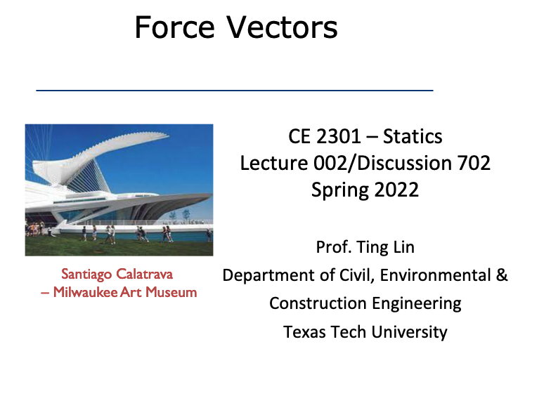
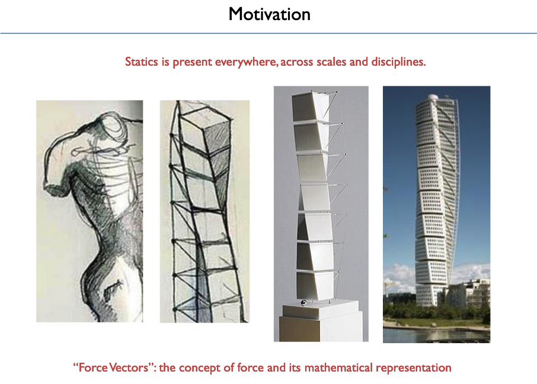
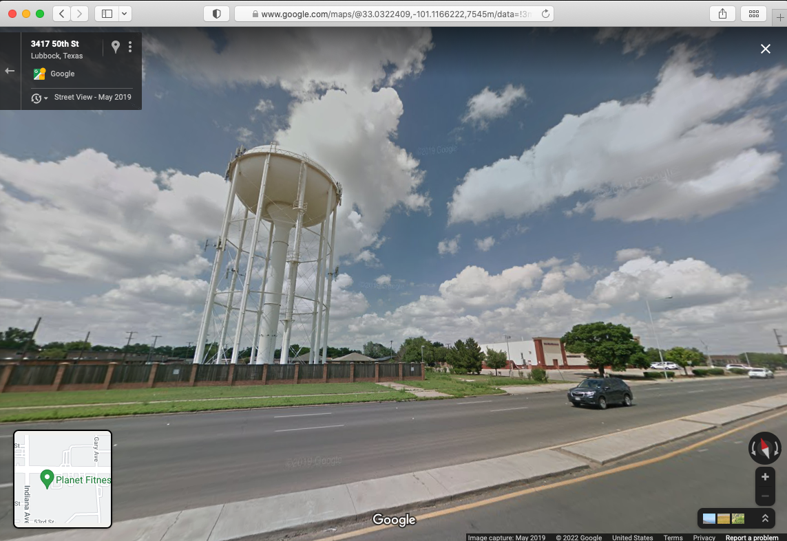
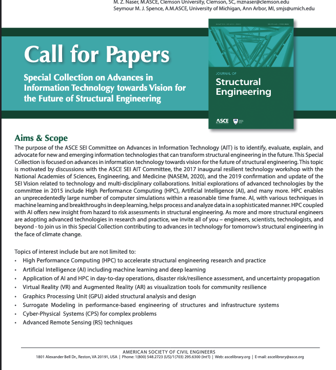

CE 2301 Statics - Inspiration¶
Nature Inspried Design, Computational Thinking, and Socio-Technological Aspects of Engineering and Applications in Statics¶
A downstream application of ENGR-1320; ENGR 1330; ENGR 23__
Contributed by Ting Lin
Note
**Prerequesites (for this example)
Problem Modality
Special Instructions
Group exercise
Note
This is in-progress, mostly just graphics , problem examples to follow
Background¶
Nature (Biologically) inspired engineering design uses analogs to natural (biological) systems to develop solutions for engineering problems and can be beneficial for developing sustainable solutions to engineering problems. The innate complexity of natural systems can inspire engineers attempting to create designs involving higher levels of complexity. Several bio-inspired designs have been used in solving problems, such as the imitation of the design of pinecones to design body heat regulating clothes and the design of micro-robots that can walk on water mimicking the basilisk lizard.
Consider the image below …..

The mundane world of Force is …

When we understand Force and art maybe change from

Ugly water tower, but functional.

Instructions:¶
Problem Statement¶
Explore using the internet, youtube, books (there is a huge building full of books on campus!) …